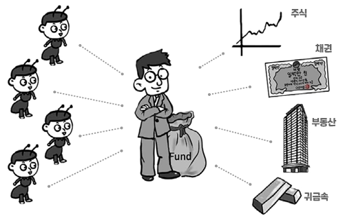

펀드
기금(基金) / Fund
다수의 투자자로부터 모금한 실적 배당형 투자 기금.[1] 멋진남자 김태랑에서는 펀드매니저가 자기는 한 푼도 손해 안 보고 남의 돈으로 하는 도박으로 표현되었다. 빌리어네어 걸에선 매니저만 이득보는 상품. 주식, 채권, 파생상품 등에 대한 투자를 위해 고객들로부터 돈을 모아서 구성하는 일정 금액의 자금 운용 단위를 가리킨다. 대한민국에서는 펀드 상품 자체까지 펀드라고 부른다. 은행, 증권사 등에서 가입할 수 있다. 주식형과 채권형이 가장 기본적인 형태고, 상품의 편입 비율에 따라 무궁무진하게 분류를 만들 수 있다. 예금이 아닌 투자 상품인 관계로 일정액의 수수료를 떼는데 적게는 0.6%에서 3~4% 이상 떼는 펀드도 있다. 매입시에 수수료를 떼는지 아닌지에 따라서 종류가 나뉘어 있는데, 떼는 것은 수수료선취(A), 떼지 않는 것은 수수료미징구(C)라고 하며 일반적으로 수수료미징구형이 총보수비용비율(TER)이 높다. 아예 주식, 채권 등 기존 금융 상품이 아닌 부동산, 선박, 비행기, 석유, 금, 은, 탄소배출권, 날씨[2]날씨에 관한 펀드는 대한민국에는 없고 미국에 있다. 등을 기초로 한 펀드까지 있다.
순자산 규모로는 미국,[3]2위인 룩셈부르크의 5배. 룩셈부르크,[4]한국의 10배. 호주가 상위권에 있다. 한국은 13위이며 상위 국가보다 주식형 펀드의 비율이 낮은 것으로 나타났다. 한국에는 2000년 기준 1만 4,100개가 조성되어 있으며, 2009년에는 8,900여개로 조금 줄었다고 한다.[5] 2000년에는 통계에 포함되었던 사모 펀드나 헤지펀드, 연기금, 퇴직 보험 등을 제외한 부분이 크며, 실제로는 2000년보다 늘었을 것으로 대부분의 금융 전문가들은 보고 있다. 순자산 13위이지만 펀드 수는 세계 1위라서 속 빈 강정으로 평가받는다.[6]사모펀드로 통계에 잡히는 ELS의 급증이 펀드 수를 늘리는 데에 일조했다고 한다. 대한민국의 법률[7]「간접투자자산운용업법」 제 1조. 상 간접 투자로 간주된다.[8]주식이나 부동산 등에 개인 투자자들이 직접 뛰어드는 것과는 달리 펀드매니저를 통해 간접적으로 투자한다는 의미에서 붙은 듯. 유사품으로 한국에는 골드 뱅킹이란 것도 있다. 이것은 실물 금을 0.01g 단위로 쪼개 파는 증권을 말한다. 투자 대상이 금이고, 운용이 없어서 배당이나 이자가 없다는 것만 빼면 펀드와 거의 같은 상품이고 법적(자본시장법)으로도 파생 결합 증권이라서 펀드와 같은 규제를 받는다.
펀드는 판매사와 운용사라는 두 가지 회사가 엮여 있다. 운용사인 자산운용사에서 증권회사에 새로운 펀드를 만들었다고 알려주면, 판매사인 증권사가 판매 커미션을 받고 대신 팔아주는 것이다. 많은 사람들이 판매사와 운용사를 대단히 혼동하는데, 판매사는 그저 물건을 파는 역할(펀드 가입, 매수, 매도 등)만 할 뿐 돈을 어떻게 굴리는가는 전혀 관심이 없다. 이마트에서 롯데제과의 과자를 판매하는 상황으로 비유할 수 있겠다. 과자의 맛은 판매사가 아닌 제조업체가 결정하는 것과 똑같다고 보면 된다. 펀드도 마찬가지로 어떤 철학으로 어떤 곳에 투자하느냐는 운용사가 결정한다.
크게 자산운용사가 관리하는 투자신탁과 펀드 운용만을 위해 회사를 만들어 운용하는 투자회사로 구분될 수 있으며, 투자회사는 뮤추얼 펀드라고도 불린다.
출처 : 나무위키